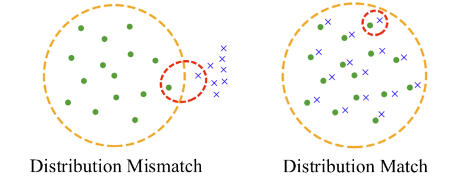
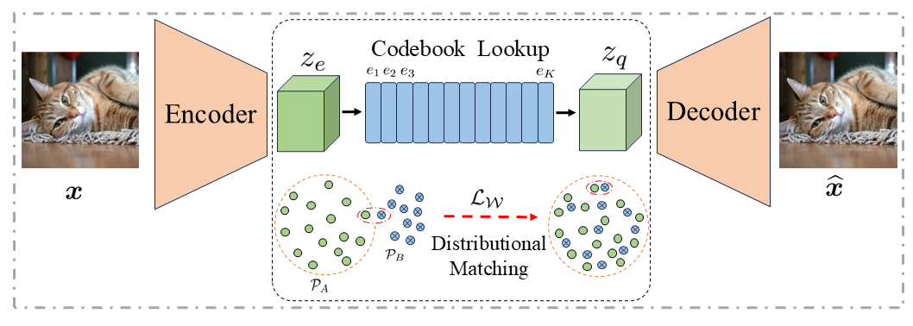
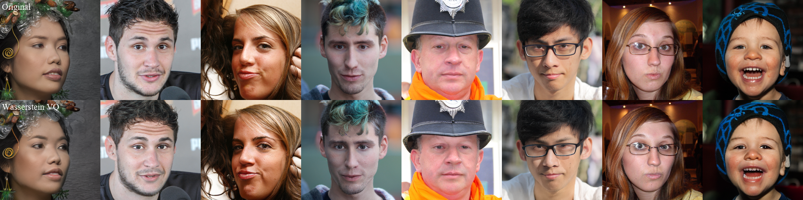
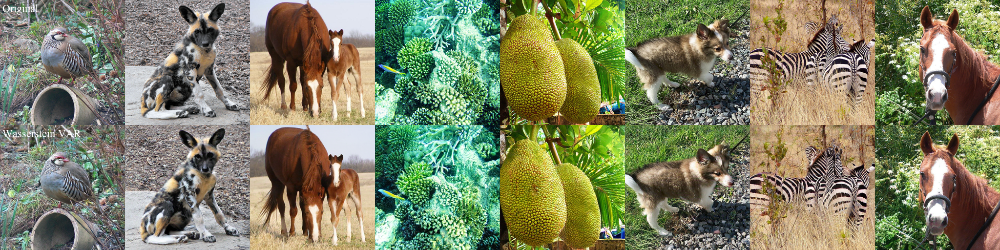

Quantization error
Average distortion between each feature and its nearest code. Lower error tightens the bound on the STE gradient gap.
A unified theoretical and empirical framework that traces training instability and codebook collapse to one cause: a mismatch between feature and code vector distributions.
1University of Toronto2The Hong Kong University of Science and Technology3Boston College4Lehigh University5Southern University of Science and Technology
01 Motivation
Vector quantization relies on the straight-through estimator and a learned codebook. When features and codes occupy different regions of the latent space, assignments concentrate on only a few codes: quantization error grows, gradient estimates become unreliable, and most of the codebook goes unused.

Average distortion between each feature and its nearest code. Lower error tightens the bound on the STE gradient gap.
The fraction of code vectors selected by at least one feature. Full utilization is the first defense against collapse.
The effective number of uniformly selected codes. It reveals imbalance that utilization alone cannot capture.
02 Theoretical insight
In high-dimensional latent spaces, the asymptotically optimal codebook distribution approaches the feature distribution.
Support. Matching supports is necessary and sufficient for full utilization and vanishing worst-case quantization error as the codebook grows.
Density. Optimal code density is proportional to f(d+2)/d. As dimension d grows, the exponent tends to 1, motivating direct distribution alignment.
03 Methodology
Wasserstein VQ adds a global distribution alignment objective to the local nearest-neighbor VQ loss. Alignment gradients update only the codebook; the encoder remains free to learn expressive feature distributions.

Distribution matching objective
Lmatch = D(PA, PB)
Here, PA is the empirical encoder-feature distribution and PB is the distribution of code vectors.
Under a mild Gaussian approximation, the quadratic Wasserstein distance aligns the mean and covariance of features and codes. It avoids pairwise comparisons and adds only modest overhead at large codebook sizes.
Efficient first- and second-order matching for approximately Gaussian latent spaces.
Nonparametric matching for strongly non-Gaussian features, with higher quadratic cost.
04 Results
Across FFHQ and ImageNet, distributional matching prevents collapse at unprecedented codebook scales. The same principle transfers to multi-scale VAR, improving quantization and reconstruction under a controlled architecture.
Tables 1 & 2
Wasserstein VQ is the only method to use the entire codebook on both datasets, while also delivering the best reconstruction metrics.
| Method | Utilization ↑ | Perplexity ↑ | PSNR ↑ | SSIM ↑ | Rec. loss ↓ |
|---|---|---|---|---|---|
| Vanilla VQ | 0.6% | 481.0 | 27.86 | 74.2 | 0.0118 |
| STE++ | 0.5% | 450.7 | 27.52 | 72.4 | 0.0130 |
| EMA VQ | 2.7% | 2,087.5 | 28.43 | 74.8 | 0.0105 |
| Online VQ | 3.6% | 1,556.8 | 27.12 | 71.1 | 0.0142 |
| Wasserstein VQ | 100% | 93,152.7 | 29.53 | 78.0 | 0.0083 |
FFHQ · 256 tokens · codebook size K = 100,000
| Method | Utilization ↑ | Perplexity ↑ | PSNR ↑ | SSIM ↑ | Rec. loss ↓ |
|---|---|---|---|---|---|
| Vanilla VQ | 0.4% | 337.0 | 24.43 | 57.4 | 0.0295 |
| STE++ | 0.9% | 730.6 | 24.86 | 59.1 | 0.0269 |
| EMA VQ | 3.0% | 2,170.0 | 25.13 | 60.1 | 0.0257 |
| Online VQ | 4.1% | 1,709.9 | 24.95 | 59.1 | 0.0267 |
| Wasserstein VQ | 100% | 93,264.7 | 25.88 | 63.0 | 0.0223 |
ImageNet-1K · 256 tokens · codebook size K = 100,000
Table 6
With the VAR encoder-decoder and latent features held fixed, Wasserstein matching lowers quantization error, increases perplexity, and improves reconstruction fidelity.
| Method | Codes | Error ↓ | Utilization ↑ | Perplexity ↑ | r-FID ↓ |
|---|---|---|---|---|---|
| VAR | 4,096 | 0.283 | 100% | 2,981.4 | 0.92 |
| Wasserstein VAR-c | 4,096 | 0.255 | 100% | 3,286.2 | 0.81 |
| Wasserstein VAR-c | 8,192 | 0.240 | 100% | 6,518.2 | 0.73 |
Wasserstein VAR-c improves from 0.83 after 5 adaptation epochs to 0.73 after 15.


05 Takeaways
It unifies optimization stability and codebook collapse under one geometric explanation.
It scales to codebooks with 100,000 entries while maintaining complete utilization.
It is architecture-agnostic, supporting VQ-VAE, VQGAN, and downstream token-based models.
06 Citation
Please cite the paper if distributional matching helps your research.
@article{fang2026distributional,
title = {Distributional Matching for Vector Quantization:
A Unified Theoretical and Empirical Framework},
author = {Fang, Xianghong and Guo, Litao and Chen, Hengchao and
Zhang, Yuxuan and Xia, Xiaofan and Song, Dingjie and
Liu, Yexin and Wang, Hao and Yang, Harry and Sun, Qiang and
Yuan, Yuan},
journal = {arXiv},
year = {2026}
}